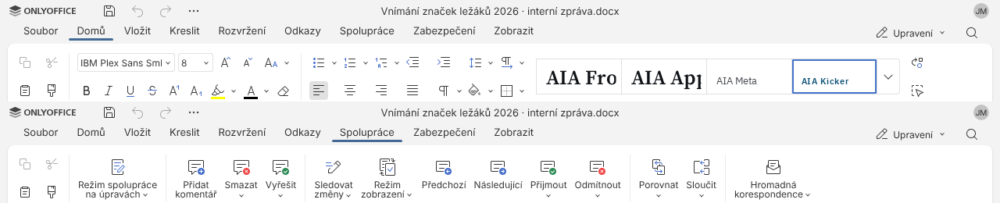
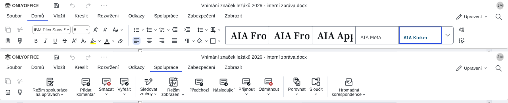
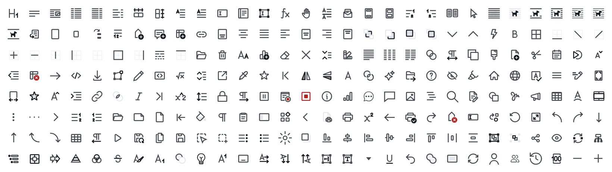

Editor zprávy: vzhled a ověření
Zpráva se upravuje ve skutečném editoru ONLYOFFICE Docs 9.4.0.1, který AIA hostuje na docs.<hostname>. Tady je, jak vypadá v motivu AIA proti výchozímu, co jsme na něm ověřili a co mu AIA posílá. Snímky jsou ze skutečného serveru s interní zprávou fiktivní studie.
Motiv AIA proti výchozímu
{{cap}} Výchozí vzhled: modrá hlavička, písma nahrazená Arialem. Motiv AIA: bílá hlavička, podtržení karty v barvě signal 2 px, rádiusy AIA, ikony AIA, písma značky na serveru editoru.
Lišta a ikony
375 ikon, nic neubránoPlná lišta editoru, karty Domů a Spolupráce. Ikony v kresbě AIA (tah 1,5, hranaté konce, jedna barva), každé tlačítko má svou ikonu na stejném místě.



Co jsme na skutečném editoru ověřili
8 zjištěníCo AIA editoru posílá
konfigurace- {{c.k}}
- {{c.v}}
Stav ke 26. 10.: písma se vkládají až při stažení (rozhodnutí B6); motiv a ikony čekají na hostování editoru (report-editor-hosting 4) a na rozhodnutí o licenci ikon. Krok Zpráva: 11 · Zpráva.